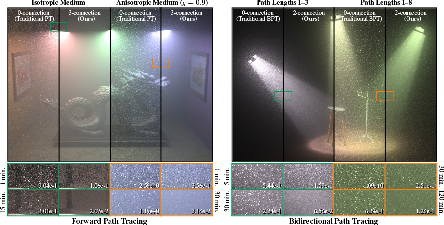

Our project will implement Volumetric Path Tracing. Currently, in project 3, we implement a path tracer which only support lights falling on explicit surface. However, in the real world, lights don't only interact with explicit surface. Our current path tracer assumes that lights travel in vacuum, but in real path tracer scene, light actually travels through certain media, such as air. Lights will interact with many particles in the media, resulting in some kind of scattering effect. Volumetric rendering enables us to simulate some real world effects when lights interact with media, such as fog, smoke and cloud, and it is important when we try to reach fidelity while doing path tracing. It is more challenging than the normal path tracer, because unlike explicit, media are implicit to interact with, and scattering involves many different lights behavior.
The participating media can be modeled as a collection of particles. Light can be absorbed or scattered when it interacts with these particles. Because the particle can run randomly, we will not treat particles as a whole and consider the "aggregate probabilistic behavior".
To sample the radiance of a camera ray from a particular pixel, we will trace a random walk through this direction towards the nearest surface hitpoint. If the walk distance is greater than or equal to the distance to surface, we will use the radiance at that hitpoint and scale it with the extinction coeffient that correlates with the inherent property of the atmosphere. If the walk distance is smaller than the the distance to surface, we will estimate the integral of incoming scattered radiance across the entire sphere (Monte Carlo). We then use the radiance samples from the random walks in Monte Carlo estimation.
We expect that the most challenging part of the project is to reduce noise in the rendering and the computational cost. To reduce noise, we may implement the importance sampling method discussed in one of the articles listed below. We will measure the quality of our system mainly be observing visual correctness and noice levels.
We will create some rendered images for volumetric scattering, with many different behaviors of light when it travels through media. For example, absorbance (particles absorbs radiance), out-scattering (particles scatter lights to other directions) and in-scattering (particles receives light from other directions). Also, we will implement both isotropic (particle scatters lights uniformly) and anisotropic scattering.
|

|